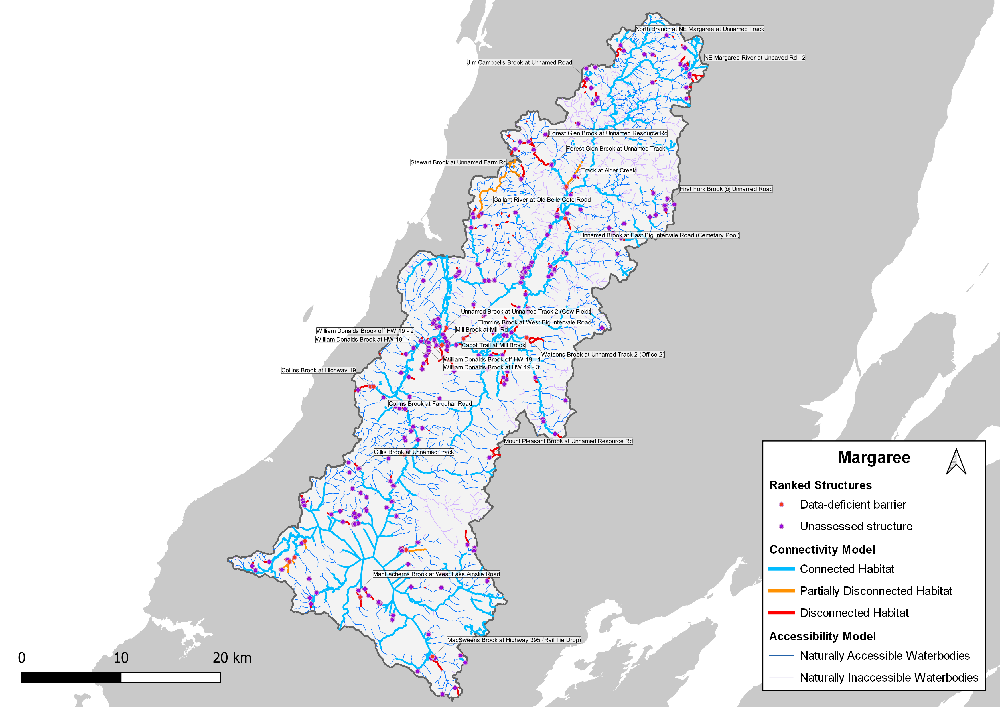

Barrier ID | Site Name | Structure Status | Structure Count Ordered by Model Rank | Actual Weighted Habitat Upstream of Structure (km) | Average Weighted Habitat Usptream of Stream (km) |
|---|---|---|---|---|---|
24f4ae44-0df6-40a0-8cb1-8cf826538570 | Forest Glen Brook at Unnamed Track | Unassessed | 1 | 3.15 | 3.15 |
5f603846-c45e-4b92-8df5-8a748b1ff0c3 | Watsons Brook at Unnamed Track 2 (Office 2) | Data-deficient barrier | 2 | 2.63 | 2.63 |
25c7f767-8aa0-40a1-90eb-8c8440fc5ea3 | Gallant River at Old Belle Cote Road | Data-deficient barrier | 3 | 2.12 | 2.12 |
6cd84598-ee60-48a7-8215-9482dd9d2ed5 | MacSweens Brook at Highway 395 (Rail Tie Drop) | Data-deficient barrier | 4 | 1.91 | 1.91 |
fde177eb-3b58-442e-919c-b05eee6f9de2 | Mount Pleasant Brook at Unnamed Resource Rd | Unassessed | 5 | 1.24 | 1.24 |
528f2897-0eac-4653-a58f-29af6ee796d9 | Mill Brook at Mill Rd | Unassessed | 6 | 1.30 | 0.66 |
2a487368-7759-4cd4-8185-aedeb78b0fa8 | Cabot Trail at Mill Brook | Data-deficient barrier | 7 | 0.03 | 0.66 |
473809e3-f75f-40ee-9ee8-19b419e26a1f | Stewart Brook at Unnamed Farm Rd | Unassessed | 8 | 0.94 | 0.94 |
4e2f2705-6e31-4e15-bb24-96bafa88812c | Jim Campbells Brook at Unnamed Road | Unassessed | 9 | 0.91 | 0.91 |
466a5b3b-6106-48aa-bf47-18cf2c99f188 | Forest Glen Brook at Unnamed Resource Rd | Unassessed | 10 | 3.01 | 3.01 |
4a780d7c-8f95-414f-bdf5-8e554d75adf3 | Unnamed Brook at East Big Intervale Road (Cemetary Pool) | Data-deficient barrier | 11 | 0.89 | 0.89 |
2dc38a6e-2395-42e4-a94a-5c5b8d58a3a8 | MacEacherns Brook at West Lake Ainslie Road | Unassessed | 12 | 0.63 | 0.63 |
3f71b802-4490-4830-a5e7-2e11d1be4d7b | Unnamed Brook at Unnamed Track 2 (Cow Field) | Data-deficient barrier | 13 | 0.68 | 0.68 |
bbe3571d-c60f-4848-bc1b-c1b338a8d8e7 | North Branch at NE Margaree at Unnamed Track | Unassessed | 14 | 0.80 | 0.80 |
28a2e336-9709-4862-a079-8eefad6b943c | Collins Brook at Highway 19 | Data-deficient barrier | 15 | 0.99 | 0.58 |
4c52ad27-03fd-4f44-9f0d-6a72bb50718b | Collins Brook at Farquhar Road | Data-deficient barrier | 16 | 0.17 | 0.58 |
d86e2a64-08cb-43f8-a303-cc3564a00f32 | Track at Alder Creek | Data-deficient barrier | 17 | 0.77 | 0.77 |
bb1f43c2-f195-4c4d-aa3e-8f39b1459ec9 | William Donalds Brook off HW 19 - 1 | Unassessed | 18 | 0.42 | 0.46 |
cc9bdd7f-cf58-47b2-bc64-a8f3062d09e2 | William Donalds Brook off HW 19 - 2 | Unassessed | 19 | 0.26 | 0.46 |
1c13518c-e5be-4fed-9006-89aa54e7a36f | William Donalds Brook at HW 19 - 3 | Unassessed | 20 | 0.57 | 0.46 |
5fad4cdd-8326-4f67-ad86-b9a7d39e8e1c | William Donalds Brook at HW 19 - 4 | Unassessed | 21 | 0.59 | 0.46 |
75564592-962c-42f6-8308-be9b12e92317 | NE Margaree River at Unpaved Rd - 2 | Unassessed | 22 | 0.69 | 0.69 |
33e0e37e-a988-4398-8fec-229cc29565d6 | Gillis Brook at Unnamed Track | Unassessed | 23 | 0.68 | 0.68 |
56f79c08-7515-42fe-b1cf-d196b35ee1f4 | First Fork Brook @ Unnamed Road | Unassessed | 24 | 0.48 | 0.48 |
6b8661d2-9dd4-4943-988a-500823e03bed | Timmins Brook at West Big Intervale Road | Data-deficient barrier | 25 | 0.61 | 0.61 |
Current Connectivity Status
In the Margaree watershed, 441.85 km of Atlantic Salmon habitat are currently connected to the ocean and 51.45 km are disconnected from it. This means that 89.6% of the 493.3 km of total habitat is connected.
Structure Count
In the Margaree watershed, 257 structures potentially disconnect Atlantic Salmon habitat. Of these, 0 are identified as barriers in need of rehabilitation (priority barriers), 0 are identified as barriers that do not warrant rehabilitation (non-actionable), and 255 require further field assessment.
Maps

Habitat Accumulation Curves
Figure 2: Habitat Accumulation Curve (HAC) showing structures in the Margaree watershed as of May 2026. Structures are ranked based on how much (km) weighted habitat for Atlantic Salmon is upstream. The y-axis represents the cumulative amount of potential habitat gain (km), down-weighted by 75% for first-order streams and 25% for second-order streams, and by passability (25%, 50%, or 75%) of partial barriers. Sets of structures are indicated by a grey line below the curve, indicating that gains from addressing the downstream structure alone would be less than the combined gains from addressing all structures in the set. Habitat upstream of unassessed structures is considered disconnected until field assessments are completed. Structures that were excluded as passable are not shown.